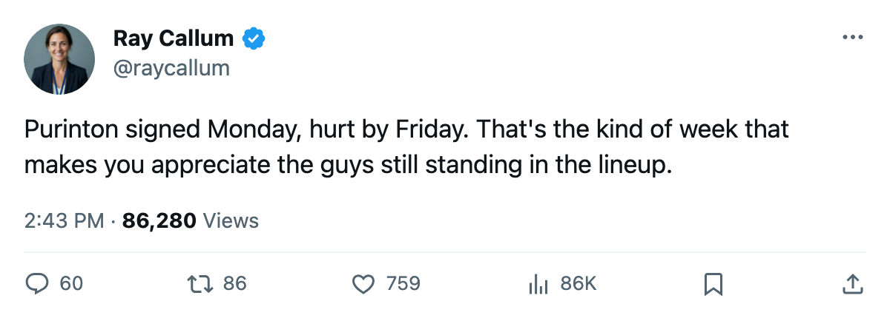

Injury Report: Rangers lose Purinton (back); return targeted for November 17
Two clubs lost players signed five days ago; the league's infirmary is back to 5 names, 3 of them new
 Ray CallumSenior correspondent · Home Ice Network
Ray CallumSenior correspondent · Home Ice Network New York Rangers defenseman
New York Rangers defenseman  Dale Purinton66 landed on the injured list with a back injury, the league said, with a return date of November 17. He signed with New Jersey's Metro Division rival on October 10 for $173,610. The onset window is between October 13 and October 15, so the Rangers lost him within days of the signing.
Dale Purinton66 landed on the injured list with a back injury, the league said, with a return date of November 17. He signed with New Jersey's Metro Division rival on October 10 for $173,610. The onset window is between October 13 and October 15, so the Rangers lost him within days of the signing.
The same window carries Steve Ott70 to the  Dallas Stars IR sheet with a concussion, targeted for November 5. Dallas signed the left winger on October 10 for $511,830. Ott's 70 overall rating made him a depth piece; his absence through the first six weeks is not, by itself, a crisis for a team that is 2-1 through 3 games.
Dallas Stars IR sheet with a concussion, targeted for November 5. Dallas signed the left winger on October 10 for $511,830. Ott's 70 overall rating made him a depth piece; his absence through the first six weeks is not, by itself, a crisis for a team that is 2-1 through 3 games.
Purinton carries a 72 overall on the blue line and the Rangers have dressed 3 goaltenders and rotated 5 defensemen through 3 games.  Mike Dunham83 has taken 2 of 3 starts;
Mike Dunham83 has taken 2 of 3 starts;  Dan Blackburn81 got 1. New York visits
Dan Blackburn81 got 1. New York visits  Buffalo Sabres on October 17 with Purinton and Dale Purinton's slot still open.
Buffalo Sabres on October 17 with Purinton and Dale Purinton's slot still open.
The infirmary on October 13 carried 5 names. Three of them were clearing before the weekend:  Pavel Kubina79 (ankle) and
Pavel Kubina79 (ankle) and  Robert Reichel73 (wrist) returned within 2 days each.
Robert Reichel73 (wrist) returned within 2 days each.  Jaromir Jagr91's elbow keeps him out until October 17, and
Jaromir Jagr91's elbow keeps him out until October 17, and  Sandis Ozolinsh85's hand until October 16.
Sandis Ozolinsh85's hand until October 16.  Branislav Mezei73's leg is the old case, back November 13.
Branislav Mezei73's leg is the old case, back November 13.
Two bodies left the IR and two arrived. The names are different and the absences are longer.
The new names in digits
| Player | Club | Part | Onset window | Return | Days out |
|---|---|---|---|---|---|
| Dale Purinton | New York Rangers | Back | Oct 13-15 | Nov 17 | 33 |
| Steve Ott | Dallas Stars | Concussion | Oct 13-15 | Nov 5 | 21 |
Both clubs signed their man on the same day, October 10, and both placed him on the injured list within 5 days. The league records the body part and the window, not the cause.
